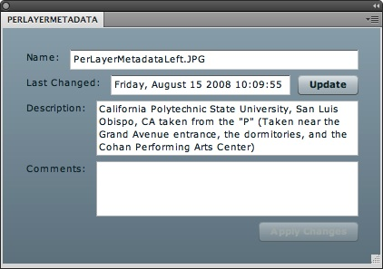

Per Layer Metadata Panel: Using Photomerge
The sixth part of the Per Layer Metadata Panel is using Adobe Photoshop Photomerge to better understand per layer metadata. Using the samples included with the Adobe Photoshop Panel Developer's Guide, users will create a panoramic using Adobe Photoshop Photomerge. Adobe Photoshop Photomerge will copy the metadata of the original images and place into its corresponding layer. The result is using the Per Layer Metadata Panel to view and access the metadata of the layers used to create the panoramic.
Instructions:
- Go to File > Automate > Photomerge....
- Under Layout, select Auto.
- Press Browse... and load PerLayerMetadataLeft.jpg, PerLayerMetadataMiddle.jpg, and PerLayerMetadataRight.jpg under the samples\sample pictures folder included with the Adobe Photoshop Panel Developer's Guide.
- Make sure Blend Images Together and Geometric Distortion Correction are checked.
- Press OK.
- Go to the Layers Panel or go to Window > Layers or press F7.
Each layer contains an original image that is stitched together to become a panorama. During Photomerge, the metadata of each of the original images were copied in each of its corresponding layer. - Select the layer called PerLayerMetadataLeft.jpg or the top most layer.
- Go to the Per Layer Metadata Panel or go to Windows > Extensions > PerLayerMetadata.

The Per Layer Metadata panel shows the name of the layer, the time when the layer was last modified or changed, the original image description metadata contained within the layer, and a text area for the users to write comments. Whenever the user changes the description or comments field, the "Apply Changes" button is enabled allowing the user's text input in the text area fields apply to the layer's metadata. - The Per Layer Metadata Panel can also export the raw metadata of the layer in the flyout menu. Select the second icon from the top right:
- Once the raw metadata of a layer is exported, it can be opened by a text editor.
- Close the Per Layer Metadata Panel.
- Close Adobe Photoshop.